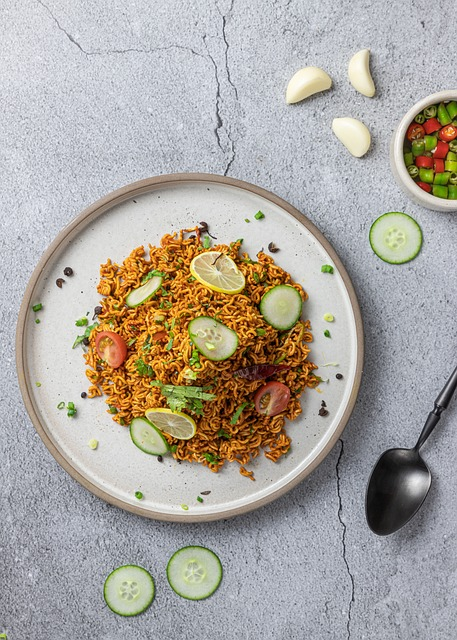

Vegetable Thukpa

Description
Everyone in my family, especially my children, love this healthy, noodly dish! Vegetable thukpa is a favorite
dish during the Tibetan New Year celebration in Nepal.
Ingredients
- 1 (16 ounce) package egg noodles
- 2 tablespoons mustard oil
- 1 cup chopped onion
- 3 green chile peppers, chopped
- 1 tablespoon minced garlic
- 1 tablespoon minced fresh ginger root
- 1 tablespoon finely chopped lemongrass
- 1 teaspoon ground cumin
- ½ teaspoon ground turmeric
- 1 large green bell pepper, chopped
- ½ (8 ounce) package sliced fresh mushrooms
- 2 cups vegetable broth
- ½ cup chopped tomatoes
- ½ cup plain yogurt
- 1/2 teaspoon ajwain
- 4 teaspoons soy sauce
- 1 bay leaf
- salt and ground black pepper to taste
- 1 (6 ounce) package fresh spinach
- 1 tablespoon chopped fresh cilantro
Steps
-
Fill a large pot with lightly salted water and bring to a rapid boil. Cook egg noodles at a boil until
tender yet firm to the bite, 7 to 9 minutes. Drain, rinse, and drain again. Set aside.
-
While egg noodles cook, heat mustard oil in a saucepan over medium-high heat. Add onions; fry until light
brown, about 5 minutes. Add chiles, garlic, ginger, lemongrass, cumin, and turmeric; saute for 1 minute. Add
bell pepper and mushrooms and stir-fry for 6 minutes. Add broth, tomatoes, yogurt, ajwain, soy sauce, bay
leaf, salt, and pepper and cook until vegetables are tender, about 5 minutes.
-
Add egg noodles and simmer for 3 more minutes; stir in spinach, cook for 1 or 2 more minutes. Garnish with
chopped cilantro.